Japan / Wakayama / Nachikatsuura
Nachikatsuura, Wakayama: things to do, food and stays
Nachikatsuura · Wakayama
Nachikatsuura
Highlighted on the Wakayama map.
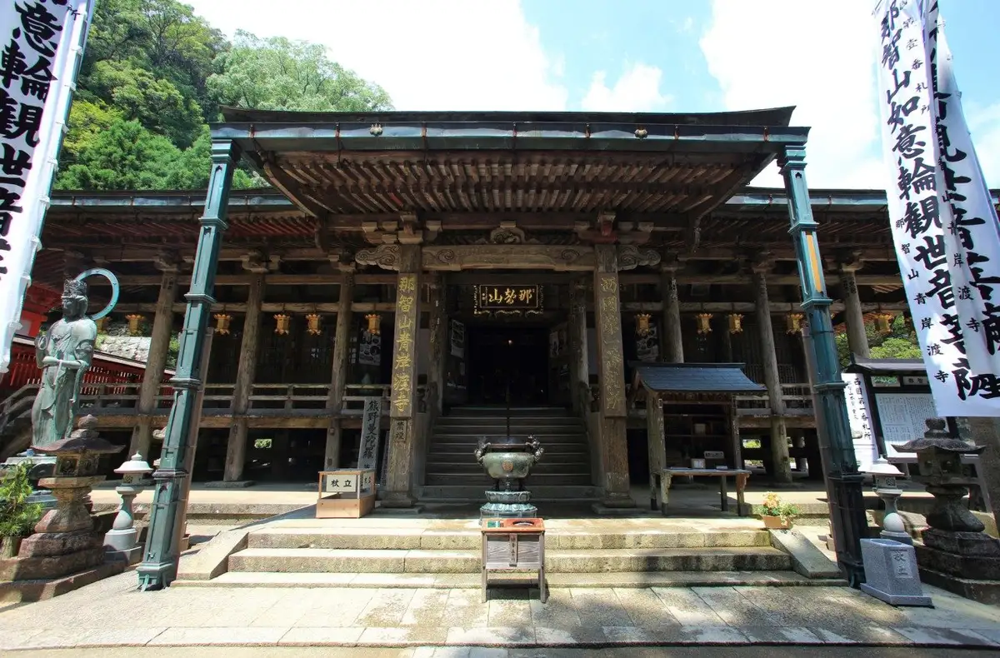
Stay
亀の井ホテル 那智勝浦
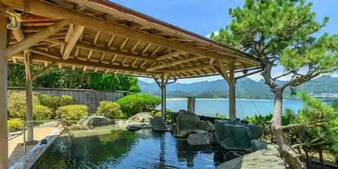
Kame No I Hotel Nachikatsura
Hotel in Katsura, Nachikatsuura with open-air baths and scenic views.
休暇村 南紀勝浦
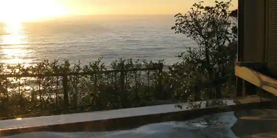
Kyukamura Nanki Katsura
Inn at Zekkeino Onsen in Ukui, Nachikatsuura with scenic views.
ホテル浦島
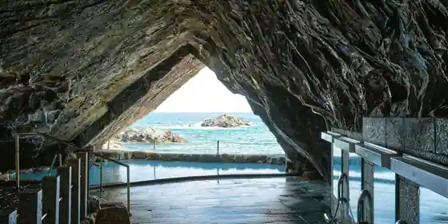
Hotel Urashima
Hotel at Tode Onsen in Katsura, Nachikatsuura.
碧き島の宿 熊野別邸 中の島
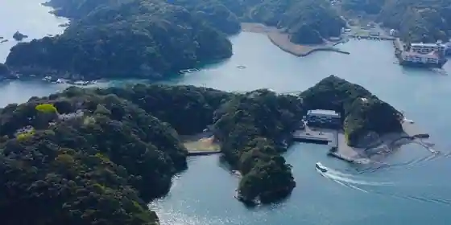
Heki Ki Shima No Yado Kumano Bettei Nakano Shima
Inn at Kenaikotono Onsen in Katsura, Nachikatsuura.
Dining
海つばめ
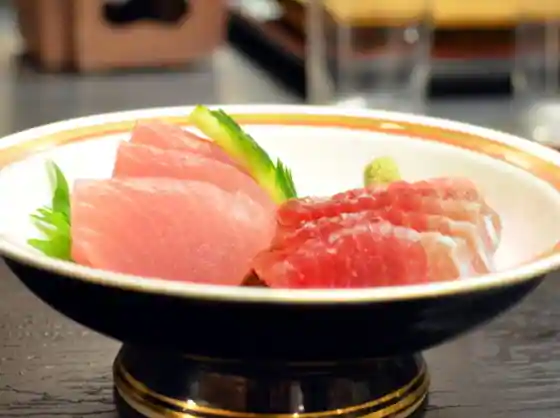
Umi Tsubame
お食事処 ひろ吉
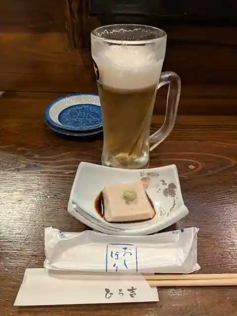
O Shokuji Tokoro Hiro Kichi
十割そば森本屋
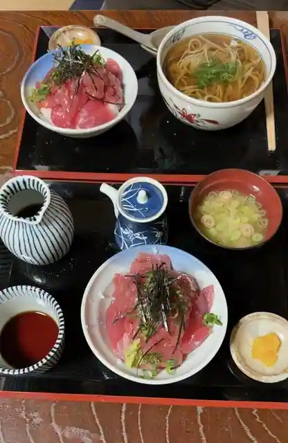
Ju Wari Soba Morimoto Ya
まぐろのヤマキ
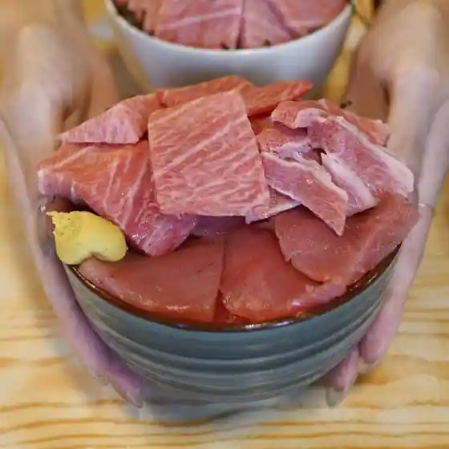
Magurono Yamaki
万清楼
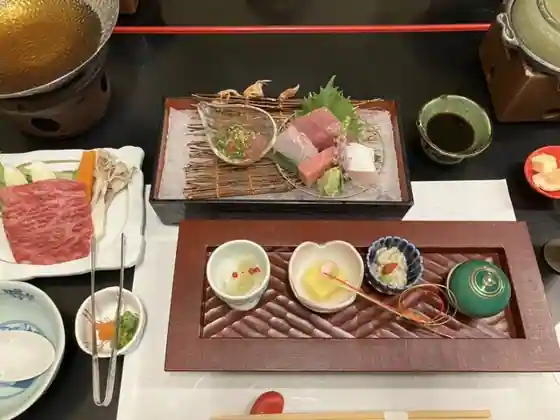
Man Kiyoshi Ro
八雲鮨 勝浦店
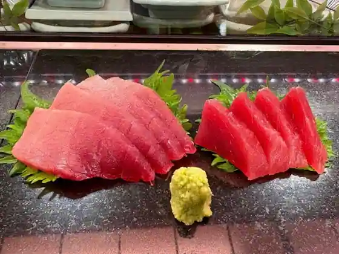
Yakumo Sushi Katsura
和か屋 本店
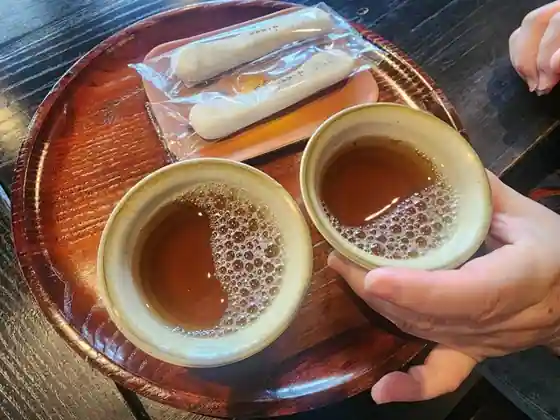
Wa Ka Ya Hon
竹原
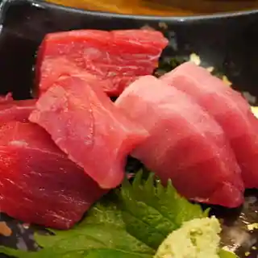
Takehara
まぐろ三昧那智
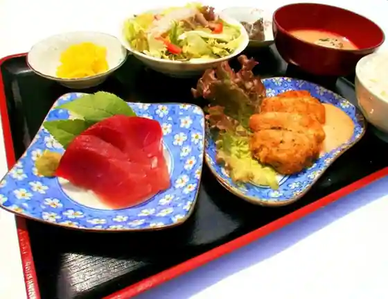
Maguro Zanmai Nachi
桂城
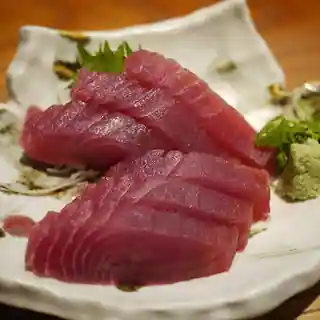
Katsura Shiro
たんぽぽラーメン
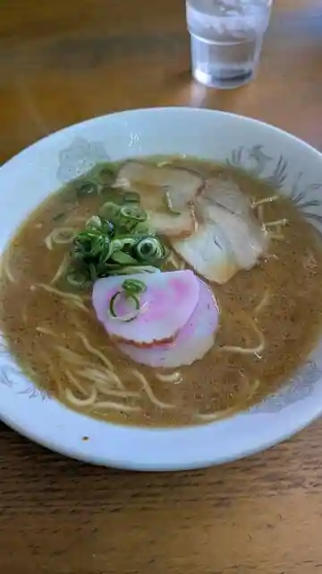
Tanpopo Ramen
bodai
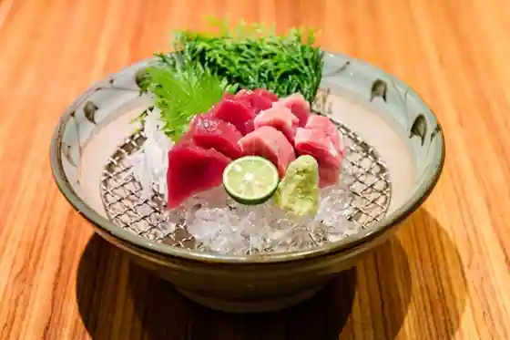
bodai
めはり寿司 二代目
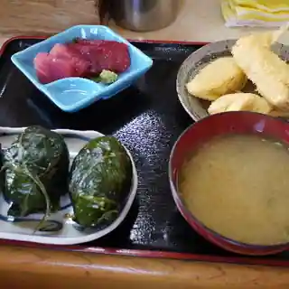
Mehari Sushi Nidaime
お食事処 大和
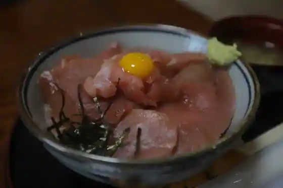
O Shokuji Tokoro Yamato
市場ごはん しげ
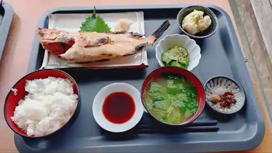
Shijo Gohan Shige
いちりん
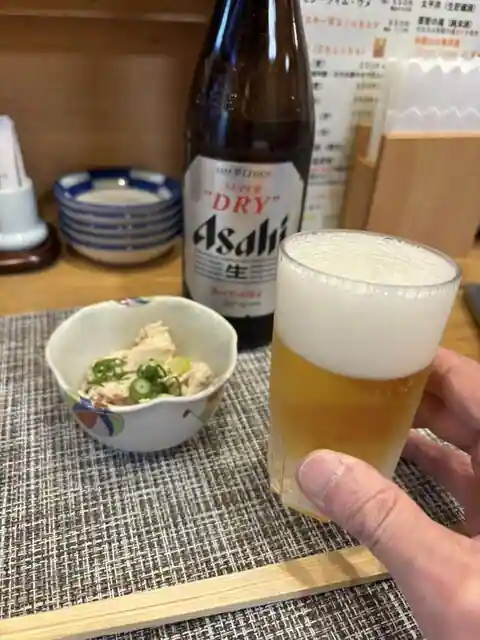
Ichirin
那智ねぼけ堂
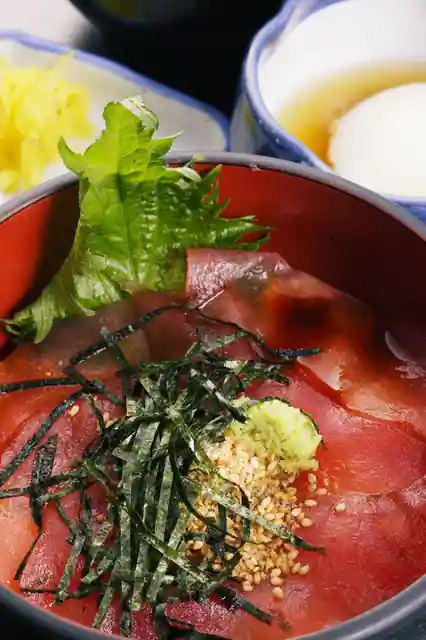
Nachi Neboke Do
鮪の脇口
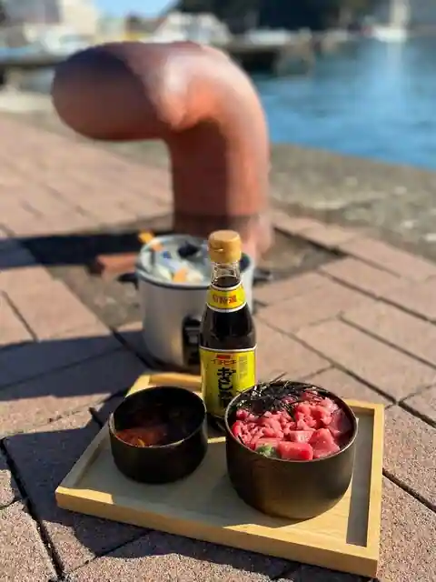
Maguro No Waki Kuchi
中西商店
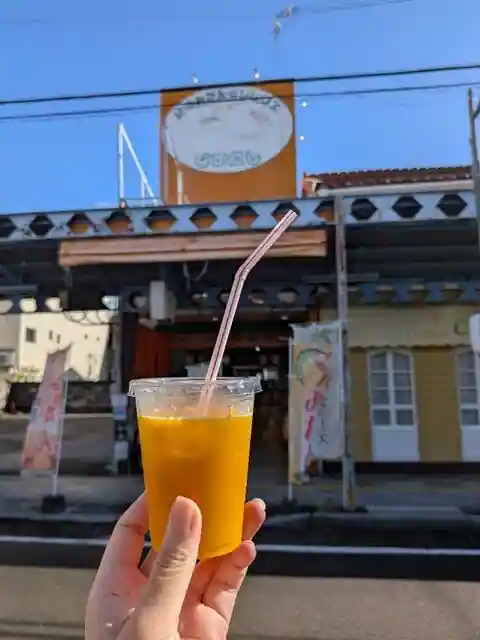
Nakanishi Sho
ハーバー食堂 日の出丸
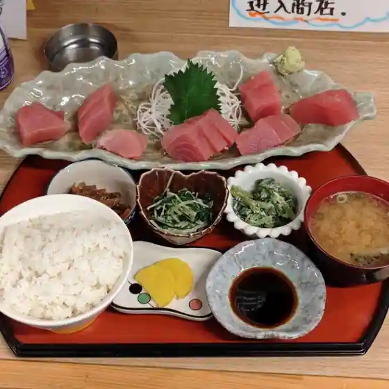
Haba Shokudo Hinode Maru
ステーキハウスひのき
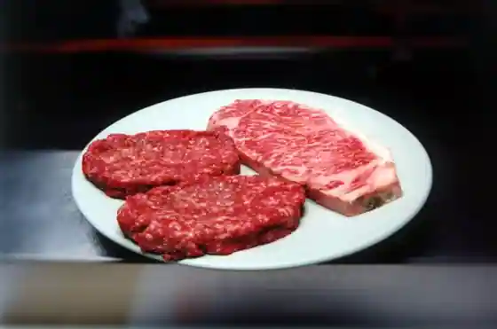
Steak House Hinoki
ますだや
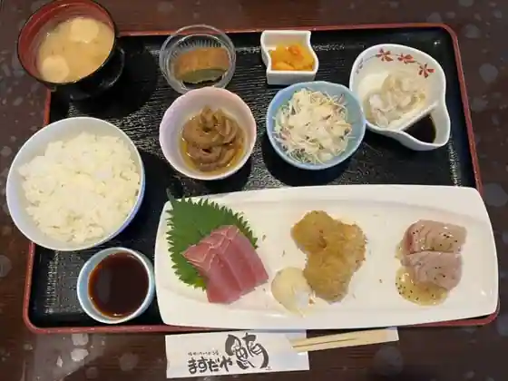
Masudaya
大漁
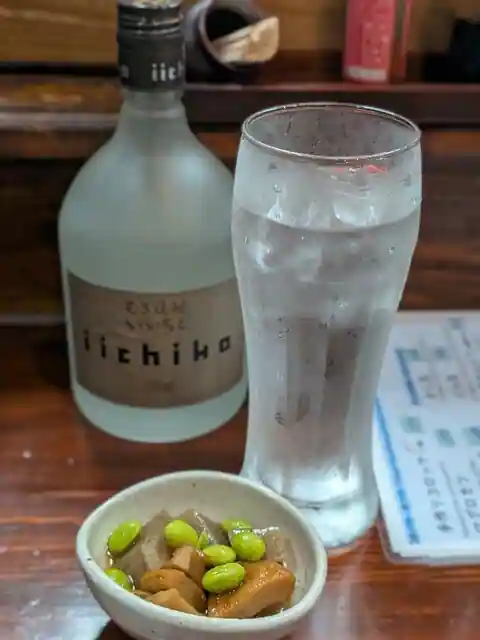
Tairyo
Sights
Nachi Falls
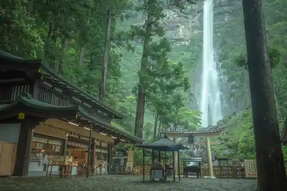
Kumano Nachi Taisha
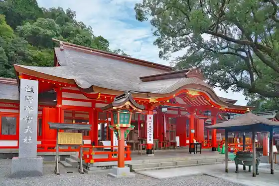
Bo Ki Hora
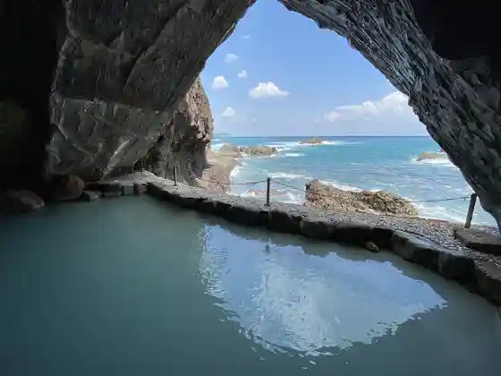
Nachi Yama Seiganto Tera
Kumano Kodo Daimon Saka
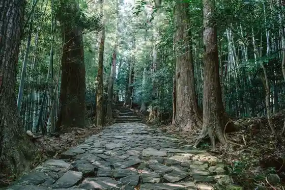
Roadside Station Nachi
Benten Shima
Butsubutsu Kawa
Fudaraku Yamadera
Enman Chiko Sono Oto Campground
Myoho Yama Amida Tera
Ki no Matsushima
Tama no Ura Beach
Kankyo Sho Yoshino Kumano National Park Uku I Bijita Center
Yukashi Kata